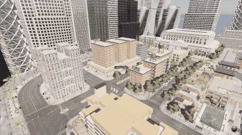
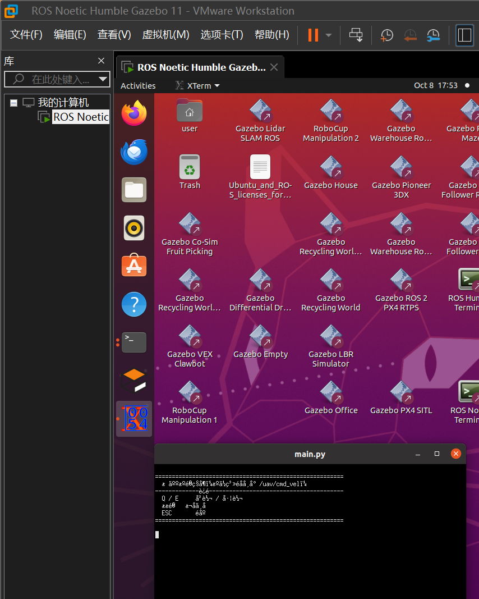
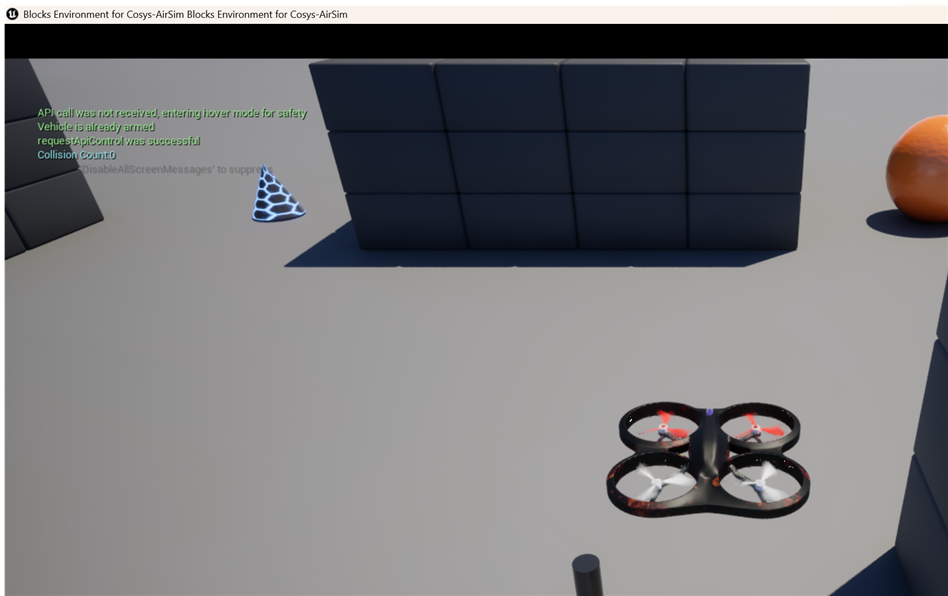
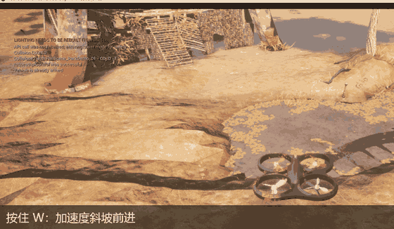

无人机键盘控制（uav_keyboard_control）
任务①「无人机仿真 + 键盘控制」的 ROS 侧实现：把终端按键转换为机体系速度指令，
发布到 /uav/cmd_vel，由 carlair_ros_bridge 连仿真器执行。仿真/坐标换算/安全限幅
集中在桥接层，键盘、规划器、神经网络控制器共用同一条指令通道。
在"一个键一个轴"的基础上，本模块还支持多键组合（W+A 斜飞、W+Q 边走边转）、
加速度限幅的平滑调速（速度按斜坡逼近目标，松开后同样斜坡回零），以及把键盘从
"直接控制"升级为"技能控制"的技能宏（1/2/3 触发起飞、旋转、前进，基于
/uav/odom 闭环），并顺带修掉了"按方向键会误退出"的问题。语义见第 2 节，
实现见第 4 节，技能宏单独在第 8 节。
1. 运行架构
终端按键 ──► uav_keyboard_control ──/uav/cmd_vel──► carlair_ros_bridge ──► CarlaAir/AirSim
(raw 模式读键) (geometry_msgs/Twist) (坐标换算+执行) (无人机)
2. 按键映射
机体系（x 前 / y 左 / z 上）：
| 按键 | 动作 | Twist 分量 |
|---|---|---|
W / S |
前进 / 后退 | linear.x = ±horiz_speed |
A / D |
左移 / 右移 | linear.y = ±horiz_speed |
R / F |
上升 / 下降 | linear.z = ±vert_speed |
Q / E |
右转 / 左转 | angular.z = ±yaw_rate |
组合键（如 W+A、W+Q） |
斜向 / 边走边转 | 各轴分量叠加 |
1 / 2 / 3 |
技能宏：升到 1.5 m / 原地转 360° / 前进 3 m | 基于 /uav/odom 闭环，结束回悬停 |
| 松开 | 悬停 | 按 accel_* 斜坡回零 |
ESC / Ctrl-C |
退出 | 先补发一条零速 |
Q/E 的方向遵循 AirSim 机体系 yaw_rate 约定（Q=+yaw_rate 机头右转）。
三点补充：
- 组合键：
W+A下发linear.x = +horiz_speed, linear.y = +horiz_speed；W+S这类互斥组合自然抵消为 0。终端没有"按键抬起"事件，是否按住靠 "最近key_hold_timeout（默认 0.15 s）内是否还收到过该键"判断，见 4.4。 - 平滑：目标速度仍是上表的
±horiz_speed等，但实际下发值按accel_*斜坡逼近， 不会从 0 直接跳变到 2 m/s；松开后同样斜坡回零（4.5）。 - 方向键不误触：
ESC [ A等转义序列会被整段吃掉，按方向键既不退出， 残字节也不会被当成运动键（4.6）。 - 技能宏：
1/2/3触发一次闭环动作，细节与参数见第 8 节；宏运行中按任意方向键 立即取消并接管（手动优先）。
3. 编译与运行
# 终端 1：桥接（连仿真 + 执行 + 自动起飞悬停）
source ~/bridge_ws/devel/setup.bash
roslaunch carlair_ros_bridge main.launch
# 终端 2：键盘控制
source ~/bridge_ws/devel/setup.bash
roslaunch uav_keyboard_control main.launch
把焦点放在键盘控制终端，按 W/A/S/D/R/F/Q/E 操控（可同时按住多个键斜飞），松开后平滑减速到悬停，ESC 退出。
4. 实现要点
4.1 终端 raw 模式
Linux 终端默认行缓冲（要按回车），用 termios+tty 进入 raw 模式即可单键即时响应：
with RawKeyReader() as reader: # __enter__ 切 raw，__exit__ 恢复
key = reader.get_key(timeout=0.03) # select 非阻塞读一个字符
with 语句保证 Ctrl-C 或异常退出时也能恢复终端设置，不会把用户的终端卡在 raw 模式。
4.2 按键 → 速度：纯函数
key_to_cmd(key, horiz, vert, yaw) 把按键映射为 (vx, vy, vz, wz)，
step_once 再打包成 geometry_msgs/Twist。两者都不依赖 ROS/终端，
可在无 ROS 的机器上单元测试（tests/test_keyboard_local.py，79 项，覆盖单键、组合键、按键保持、加速度斜坡与转义序列）。
4.3 每轮循环发布一条指令
节点以 30 Hz 运行，每轮循环都发一条 Twist（包括全零）：这既满足桥接层
「cmd_timeout 内必须有新指令」的要求，也给平滑器一个固定节拍。按键不锁存——
要持续运动必须真的按住（终端自动重复会持续送字节）；自动化时即"定频重复注入"，见 7.6。
4.4 按键保持：终端没有"抬起"事件
raw 模式下终端只在按下（以及操作系统的自动重复）时送字节，松手不会再送任何东西， 因此"是否还按住"只能靠时间戳推断：
class KeyTracker:
def press(self, key, now): # 收到一个字节 -> 记录最近时间
if _axis(key) is not None:
self._seen[key.lower()] = now
def active(self, now): # 超过 hold_timeout 没再收到 -> 判松开
expired = [k for k, t in self._seen.items() if now - t > self.hold_timeout]
...
- 按住某键时，终端自动重复会以 25~40 ms 的间隔持续送同一个字节，时间戳被不断续期；
- 默认
key_hold_timeout = 0.15 s，相当于连丢 4 帧才判松开，既不会因偶发丢帧抖动， 松手后也不会拖太久； - 未知键（方向键序列的残字节、功能键等）不进入保持集合，不会污染运动指令。
4.5 组合键与加速度平滑
组合键只是把"一个键"换成"一组键"，各轴分量相加，仍是纯函数：
merge_target(["w", "a"]) # -> (vx=+h, vy=+h, 0, 0) 斜向
merge_target(["w", "s"]) # -> (0, 0, 0, 0) 互斥抵消
下发前再经加速度限幅，把目标速度斜坡逼近：
self.cmd = tuple(ramp_towards(cur, tgt, accel * dt) for cur, tgt, accel in ...)
节点级指令序列（30 Hz，accel_horiz=4.0，不含仿真器动力学）：按住 W 时
vx 从 0 逐帧 0.13 → 0.27 → 0.40 → … → 2.00 爬升，约 0.5 s 到满速；松开后
约 0.5 s 斜坡回零。把三轴 accel_* 都设为 <= 0 即可退回"瞬时阶跃"的旧手感。
单帧积分时长还有 MAX_LOOP_DT = 0.1 s 的上限：终端若被阻塞（拖动窗口、系统卡顿），
不会因为一帧 dt 很大就把速度积分到很高。
4.6 ESC 与方向键
方向键在终端里发送的是 ESC [ A、ESC [ 1 ; 5 A 这类 CSI 序列，第一个字节就是 0x1b。
如果只按字节判断，按一下方向键就会退出节点（旧实现的问题），而且序列残字节 [、A
还会被当成运动键。现在收到 0x1b 后先把整段序列吃掉，只有"孤立的 ESC"才退出：
if key == "\x1b":
if consume_escape(reader): # ESC [ ... 终止字节
continue
break
退出（含异常退出）时还会补发一条全零 Twist，不必等桥接层 0.5 s 超时保护才停。
5. 与视口内置 WASD 的关系
CarlaAir 视口内置键盘操控（任务①的「仿真」部分），本模块提供 ROS 侧键盘控制
（任务①的「键盘控制」部分）。两者可对比验证：视口 WASD 直接驱动仿真器，
本模块走 键盘 → /uav/cmd_vel → 桥接 → 仿真器 的完整 ROS 链路，正是后续
规划器、神经网络控制器的通用入口。
6. 效果图
键盘控制演示（录屏转 GIF，W 前进 / A 左移 / D 右移 / R 上升 / Q 右转 机动，第三人称视角）：

7. 本机实测记录
7.1 运行环境
| 项 | 配置 |
|---|---|
| 宿主机 | Windows + Unreal Engine 5.5 + Cosys-AirSim 3.3（Blocks 环境） |
| 客户机 | VMware 虚拟机，Ubuntu 20.04.6 LTS（内核 5.15） |
| ROS | ROS Noetic（Python 3.8.10） |
| 工作区 | ~/uav_ws（catkin） |
| 仿真器地址 | 192.168.49.1:41451（本次实测环境的值，即 VMware NAT 下 VMnet8 的宿主机地址；换环境请用 ipconfig 重新确认） |
| AirSim RPC 监听 | 本构建（Cosys-AirSim 3.3）无需修改 settings.json：监听地址由顶层键 "LocalHostIp" 决定，默认空字符串即监听所有网卡。依据与实测见 7.1.1 |
7.1.1 关于 RPC 监听地址
原文写的是「settings.json 必须含 "ApiServerAddress": "0.0.0.0"，默认只监听 127.0.0.1」。
经核对本机构建的源码与二进制，这两句都不成立，特此更正：
- 键名不对。 本构建读取的是顶层键
"LocalHostIp"，不是ApiServerAddress。 源码依据Plugins/AirSim/Source/AirLib/include/common/AirSimSettings.hpp：
//by default we spawn server at local endpoint. Do not use 127.0.0.1 as default below
//because for docker container default is 0.0.0.0 and people get really confused why things
api_server_address = settings_json.getString("LocalHostIp", "");
api_port = settings_json.getInt("ApiServerPort", RpcLibPort);
佐证：该构建的 Binaries/Win64/UnrealEditor-AirSim.dll 里能查到字符串
LocalHostIp 与 ApiServerPort，但查不到 ApiServerAddress。
-
「默认只监听 127.0.0.1」没有依据。 上面两行的默认值是空字符串， 紧邻的源码注释还明确写了「不要默认用 127.0.0.1，因为 docker 容器场景默认是 0.0.0.0」。 也就是默认就监听所有网卡。
-
实测与之一致。 宿主机
netstat -ano | findstr 41451显示0.0.0.0:41451， 客户机侧直连该端口即可建立 TCP 连接。
结论：把「虚拟机连不上」归因于 ApiServerAddress 是错的，本机实测中从未真正需要这一项。
如果确实要显式限定监听地址，应写成顶层键 "LocalHostIp": "0.0.0.0"。
7.2 运行步骤
前置：按 环境搭建与连接 配好虚拟机 ROS 环境；
按 桥接模块 的 2.1 节在宿主机启动 CarlaAir 仿真器，
等终端输出 CarlaAir is ready.（此时 41451 端口就绪）。
仿真器窗口不要最小化，否则 AirSim 取相机会阻塞。
最初的本机实测是用一个自写的控制脚本（负责起飞并爬升到 15 m）配合桥接层完成的， 那个脚本不属于本仓库。下面给出只用仓库内组件的等价步骤。
# ① 客户机：桥接层
export ROS_MASTER_URI=http://localhost:11311
source /opt/ros/noetic/setup.bash
source ~/uav_ws/devel/setup.bash
# <宿主机IP> 换成仿真器所在机器的地址（Windows 下用 ipconfig 查看，
# 桥接模块文档中的示例为 192.168.94.1）
# auto_takeoff 默认为 true：桥接层会 takeoff() 并 hover()，起飞后悬停在约 1 m
roslaunch carlair_ros_bridge main.launch host:=<宿主机IP>
# ② 客户机：把无人机送到 15 m 高空
# /uav/goal 是 ENU（z 向上为正），桥接层飞抵该点后自动悬停，
# 并把 /uav/status 置为 GOAL_DONE
rostopic pub -1 /uav/goal geometry_msgs/Point "{x: 0.0, y: 0.0, z: 15.0}"
rostopic echo -n 1 /uav/odom/pose/pose/position # 确认 z ≈ 15
# ③ 客户机：另开一个终端，键盘控制（作业要求的 launch 启动方式）
export ROS_MASTER_URI=http://localhost:11311
source /opt/ros/noetic/setup.bash
source ~/uav_ws/devel/setup.bash
roslaunch uav_keyboard_control main.launch
# 在弹出的 xterm 窗口里按 W/A/S/D/R/F/Q/E 操控，松开悬停，ESC 退出
关于
auto_takeoff：它的语义是「起飞并悬停」——桥接层源码里就是sim.takeoff()+sim.hover()，并不会自动升到 15 m；想让无人机到 15 m， 必须另外下发目标点（如上面第 ② 步）或速度指令。 若把它设为false，则无人机根本不会起飞，需要自己补上起飞动作。
7.3 实测结果
桥接层环境自检 5/5 通过：
[通过] airsim 包可用 -- 已导入
[通过] 连接仿真器 192.168.49.1:41451 -- confirmConnection 成功
[通过] 读取位姿 -- pos_enu=(-0.00, 0.00, -0.69) yaw=90.0°
[通过] 相机取帧 front_rgb -- 尺寸 640x480
[通过] 激光雷达点云 lidar1 -- 点数 8192, x∈[-71.4, 93.6] z∈[-0.4, 22.5]
自检结果: 5/5 通过
/uav/odom 发布频率实测 19.999 Hz（设计值 20 Hz）。
键盘闭环验证（用伪终端模拟真人按键，注入协议与脚本见 7.6）。 下面是最初一次运行的位姿记录——当时用的是"单次写入 + 保持"协议，由 7.6.1 的源码分析可知该协议下一个字节只产生一条指令，因此这组数据只用来证明整条链路有效、位置确实发生变化，不能当作定量指标（定量结论见 7.4、7.6）：
[test] 节点已在伪终端中启动 (pid=22254)
[test] 按键 前进 W 3.0s / 左移 A 2.5s / 后退 S 2.5s / 右移 D 2.5s / ESC 退出
按键前 (x, y, z) = ( 3.6e-07, 2.2e-07, 15.145) ← 已按 7.2 第 ② 步送到 15 m
按键后 (x, y, z) = ( 0.389, -0.403, 15.071) ← 水平移动约 0.56 m，高度保持
位置发生实际变化，证明「键盘 → /uav/cmd_vel → 桥接层 → 仿真器」整条链路有效。
7.4 性能评价
| 指标 | 实测值 | 说明 |
|---|---|---|
/uav/odom 发布频率 |
19.999 ~ 20.24 Hz | 桥接层环境自检实测；另用 rostopic hz /uav/odom 复测为 20.010 Hz（min 0.041 s / max 0.055 s） |
| 键盘节点指令发布频率 | 30 Hz | 由 rate/publish_hz 设定。这是设定值，不能当作端到端响应延迟的实测值 |
| 指令水平速度（稳态） | 2.0 m/s | 由 control/horiz_speed 决定，可用参数覆盖；v2 起需要约 0.5 s 的加速段才到满速 |
| 单次按键脉冲的水平位移 | 约 0.20 m（v1，无平滑；1 条非零指令） | 该数字来自旧版语义：一个字节只产生一条 2 m/s 指令。v2 的脉冲会维持 0.15 s 再斜坡回零，位移已变，需重测（节点级指令积分约 0.07 m，见 7.6.1） |
| 20 Hz 定频注入 3 s 的位移 | 约 4.56 m（v1，无平滑；60 条非零指令） | 同上；v2 的指令波形变为"0.5 s 爬升 + 匀速 + 0.5 s 减速"，不能与 v1 直接比较，需重测 |
| 组合键 | v2 新增 | W+A 两轴同时给速度；W+S 抵消为 0。节点级单测覆盖（tests/test_keyboard_local.py B 节） |
技能宏：3 键前进 |
3.00 ± 0.10 m（节点级积分） | 用最小积分器当飞机跑 test_macros_loop.py；峰值速度 ≤1.5 m/s，结束指令回零。实飞位移待重测 |
技能宏：1 键高度 |
1.50 ± 0.07 m（节点级积分） | 同上；进入 ±5 cm 死区并稳定 6 帧才判定完成 |
技能宏：2 键旋转 |
360° ± 4°（节点级积分） | 同上；按累计偏航判断，不会多转一圈 |
| 遥控稳定性 | 松开后平滑回零 | 松开 0.15 s 判松开、按 accel_* 斜坡回零（水平 4 m/s² 时约 0.5 s）；桥接层 0.5 s 超时悬停仍在；退出时补发零速 |
v2 的行为变更：本节与 7.6 里带"约 0.20 m / 约 4.56 m"的位移数字测量于无平滑的 v1 （2025 年版节点）。v2 改了指令波形，旧数字不能再当作 v2 的指标；表中已标注。 7.6.1 给出 v2 的节点级指令序列（可离线复算），物理位移需要在仿真器上重测后再填入。
关于「按键响应延迟」：原表写的「< 30 ms」是用 30 Hz 轮询周期反推出来的， 既不是实测值，本身也和 30 Hz（周期 33 ms）矛盾，已删除。 要得到真实延迟，需要给按键打时间戳、再和
/uav/cmd_vel首帧的到达时刻对比， 本机没有做这项测量，因此不给出数字。
7.5 实测截图
键盘控制窗口。main.launch 通过 launch-prefix="xterm -e" 拉起，
窗口标题为 main.py，黑底白字即是键位帮助：

仿真器中无人机自动起飞至 15 m 悬停。AirSim 叠加层显示
requestApiControl was successful、Vehicle is already armed、Collision Count:0：

7.6 按键闭环的复现方法
7.6.1 先看清语义：一个字节能"续命"多久
节点主循环（v2）：
def spin(self):
with RawKeyReader() as reader:
while not rospy.is_shutdown():
key = reader.get_key(timeout=0.03) # 没按键时返回 None
if key == "\x1b": # ESC（先排除方向键序列）
if consume_escape(reader):
continue
break
self.pub.publish(self.step_once(key, now=now)) # 每轮一条 Twist
self.rate.sleep() # 30 Hz
每一轮循环发布一条 Twist，这一点两版相同；不同的是"按键还活着多久"和"速度怎么变"：
| 语义 | v1（无平滑，旧实测数据来源） | v2（当前） |
|---|---|---|
| 一个字节的有效期 | 只影响当下这一轮（≈33 ms） | key_hold_timeout = 0.15 s |
| 松开后的速度 | 下一轮立刻全零（阶跃） | 0.15 s 判松开，再按 accel_* 斜坡回零（水平约 0.5 s） |
| 多键 | 一次只有一个轴（后按的覆盖先按的） | 各轴分量叠加（W+A 斜飞、W+S 抵消） |
| 方向键 | 0x1b 开头 -> 直接退出 |
整段 CSI/SS3 序列被吃掉，不退出、不产生运动 |
| 退出 | 停止发布，等桥接层 0.5 s 超时 | 先补发一条零速再停 |
v1 的实测（评审在另一台机器 Ubuntu 20.04 / ROS Noetic / Blocks+AirSim 上做的对照复现）：
| 注入方式 | 收到的非零 /uav/cmd_vel |
水平位移 |
|---|---|---|
单次写入 W |
1 条 | 约 0.20 m |
以 20 Hz 重复写入 W、持续 3 s（60 次） |
60 条 | 约 4.56 m |
v2 的节点级指令序列（30 Hz、accel_horiz=4.0、horiz_speed=2.0，不含仿真器动力学，
由 keyboard_control.py 的纯函数逻辑逐帧推出来，可离线复算）：
| 注入方式 | v2 节点级指令 | 节点级指令积分（位移估算） |
|---|---|---|
单次写入 W |
7 条非零：0.13 → 0.27 → 0.40 → 0.53 → 0.40 → 0.27 → 0.13 m/s，之后全零 |
约 0.07 m（峰值只有 0.53 m/s：0.15 s 保持期内来不及加速到 2.0，且首帧 dt=0 不积分） |
20 Hz 重复写入 W、持续 3 s |
前 0.5 s 逐帧爬升到 2.00 m/s，其后匀速 2.00，停写后再经 0.15 s + 0.5 s 斜坡回零 | 约 5.5 m（注入段）+ 约 0.5 m（减速段），整段积分约 6.2 m |
这两组 v2 数字是指令层的，不是仿真器里的实测位移：桥接层按
cmd_duration（默认 0.1 s）分片执行，还有控制周期与机体动力学，实际位移会与积分值有差异。 真值请按 7.6.2 的协议在仿真器上重测后回填本节。本页更早的版本写的是「每个按键写一次字节、保持 2.5~3 s，节点在这段时间内持续发布该方向速度」—— 那是错的（作者当时误以为按键会被锁存），已删除；按该协议得到的数字不作数。
7.6.2 两种可复现协议
| 协议 | 注入方式 | 注入频率 | 测量时段 | 预期观测（v2） |
|---|---|---|---|---|
| A 单次脉冲 | 只写一个 b"w" |
一次 | 写入后 1.0 s 内的位姿差 | 7 条非零指令（峰值约 0.53 m/s）；指令积分约 0.07 m，待重测 |
| B 定频注入 | 循环写 b"w" |
20 Hz | 连续 3.0 s（共写入 60 次） | 指令在 0.5 s 内爬升到 2.0 m/s 并保持；整段积分约 6.2 m，待重测 |
测量方法（两条协议通用）：
- 客户机先按 7.2 启动桥接层与键盘节点，确认无人机已在目标高度悬停；
- 测量时段首尾各取一次位姿：
rostopic echo -n1 /uav/odom/pose/pose/position，两者相减即水平位移； - 同时统计指令条数核对"写入次数 → 非零指令条数"：
rostopic echo -p /uav/cmd_vel/linear/x，数其中!= 0的样本条数。
注意：桥接层
cmd_timeout有"超时自动悬停"保护，定频注入的间隔要明显小于它 （默认 0.5 s），20 Hz（50 ms）远小于该阈值。
7.6.3 注入脚本（pty + 定频重复写入，仅用标准库）
保存为 kb_inject_test.py，在已 source 工作空间的客户机上运行：
python3 kb_inject_test.py --mode pulse # 协议 A
python3 kb_inject_test.py --mode repeat --hz 20 --seconds 3 # 协议 B
点击展开 kb_inject_test.py（纯标准库，无第三方依赖）
#!/usr/bin/env python3
# -*- coding: utf-8 -*-
"""用伪终端(pty)把按键按固定频率"敲"进 uav_keyboard_control，模拟真人连续按键。
为什么要定频重复写入：节点主循环每轮只发布一条 Twist（见文档 7.6.1），
一个字节只能把该键"续命" key_hold_timeout（默认 0.15 s）；要让飞机持续运动，
必须按固定频率重复写（模拟真人按住时终端的自动重复）。
用法：
python3 kb_inject_test.py --mode pulse # 协议 A：单次脉冲
python3 kb_inject_test.py --mode repeat --hz 20 --seconds 3 # 协议 B：20 Hz 定频
"""
from __future__ import print_function
import argparse
import os
import pty
import select
import sys
import time
CMD = ["rosrun", "uav_keyboard_control", "main.py"]
def main():
ap = argparse.ArgumentParser()
ap.add_argument("--mode", choices=("pulse", "repeat"), default="repeat")
ap.add_argument("--key", default="w")
ap.add_argument("--hz", type=float, default=20.0)
ap.add_argument("--seconds", type=float, default=3.0)
ap.add_argument("--boot-wait", type=float, default=6.0, help="节点初始化等待 (s)")
args = ap.parse_args()
pid, fd = pty.fork()
if pid == 0: # 子进程：节点本体
try:
os.execvp(CMD[0], CMD)
except Exception as exc: # noqa: BLE001
sys.stderr.write("exec failed: %s\n" % exc)
os._exit(1)
print("[test] 节点已在伪终端中启动 (pid=%d)" % pid)
time.sleep(args.boot_wait) # 等节点初始化并打印启动信息
chunks = []
def drain(seconds):
"""在 seconds 秒内持续把子进程输出读走（保持伪终端不被写满）。"""
end = time.time() + seconds
while time.time() < end:
r, _, _ = select.select([fd], [], [], 0.02)
if not r:
continue
try:
data = os.read(fd, 4096)
except OSError:
return False
if not data:
return False
chunks.append(data)
return True
drain(1.0)
key = args.key.encode("ascii")
if args.mode == "pulse":
print("[test] 协议 A：单次写入 %r，测量时段 1.0 s" % args.key)
os.write(fd, key)
drain(1.0)
else:
period = 1.0 / args.hz
count = int(round(args.seconds * args.hz))
print("[test] 协议 B：%r 以 %.1f Hz 重复写入 %d 次，测量时段 %.1f s"
% (args.key, args.hz, count, args.seconds))
t0 = time.time()
for i in range(count):
os.write(fd, key)
nxt = t0 + (i + 1) * period
drain(max(nxt - time.time(), 0.0))
print("[test] 定频注入结束，实际用时 %.2f s" % (time.time() - t0))
# 松开：不再写字节，节点在 key_hold_timeout 后判松开并按加速度斜坡回零
drain(1.0)
try:
os.write(fd, b"\x1b")
except OSError:
pass
drain(0.5)
try:
os.close(fd)
except OSError:
pass
print("----- 键盘节点输出 -----")
sys.stdout.write(b"".join(chunks).decode("utf-8", "replace"))
print("----- 输出结束 -----")
if __name__ == "__main__":
main()
8. 技能宏（1/2/3）
键盘不再只是“按住才动”：按 1/2/3 触发三个基于 /uav/odom 的短闭环动作，
结束后自动回到悬停。宏运行中按任意方向键立即取消并接管（手动优先）；ESC 退出会
取消宏并补发零速。
| 键 | 动作 | 闭环量 | 结束条件 |
|---|---|---|---|
1 |
升到 macro/takeoff_altitude（默认 1.5 m） |
odom.z |
进入 ±5 cm 死区并稳定 6 帧（≈0.2 s） |
2 |
原地转 macro/spin_degrees（默认 360°） |
累计偏航（wrap 到 ±π） | 剩余 ≤ 2° |
3 |
沿机头方向前进 macro/forward_distance（默认 3 m） |
起点连线的投影距离 | 剩余 ≤ 2 cm |
8.1 为什么用闭环而不是“定时开环”
“前进 3 m”如果开环写成“以 1.5 m/s 走 2 s”，加减速、桥接层 cmd_duration（0.1 s）
分片执行、机体动力学都会带来误差，飞几次就能差出几十厘米。这里三个宏都订阅
/uav/odom（ENU 位置 + 四元数解出的偏航），每帧按实际位姿算误差，误差到阈值就结束，
所以“3 m”是量出来的 3 m，而不是数出来的 2 s。
没有位姿时宏拒绝启动（只发零速）：control/odom_timeout（默认 0.6 s）内没收到新
/uav/odom 就认为位姿不可用，避免“盲飞”。
8.2 三个控制律
# 1 键：高度 P 律 + 死区 + 稳定帧
vz = clamp(kp * (target_z - odom.z), max_vert_speed)
# 2 键：累计偏航（wrap 到 ±π），临近目标降速
accumulated += wrap_pi(odom.yaw - last_yaw)
wz = sign * min(rate, max(min_rate, 1.5 * remaining))
# 3 键：按刹车曲线收油，到点自然停下
remaining = distance - (p - p0) · dir(yaw0)
vx = min(forward_speed, sqrt(2 * brake_accel * remaining))
三者输出的仍是机体系速度，和手动键走同一条 /uav/cmd_vel、同一个
VelocitySmoother（加速度限幅）——所以宏的起停同样平滑，桥接层不需要任何改动。
8.3 状态机与接管
skill_macros.MacroRunner 一次只允许一个宏：
trigger(key, pose)：1/2/3各建一个宏对象；未知键或无位姿返回False；update(pose, dt)：推进一帧，返回速度指令；宏完成时自动清空；cancel()：手动键、stop()、退出路径调用；- 位姿在
update时丢失 -> 自动取消（不会带着旧位姿继续飞）。
主循环里的优先级是：手动键 > 宏 > 悬停。按方向键时先 cancel()，再按手动键计算目标速度，
平滑器会从当前速度平滑切过去，不会顿一下。
8.4 参数
| 参数 | 默认 | 说明 |
|---|---|---|
macro/takeoff_altitude |
1.5 | 1 键目标高度 m |
macro/spin_degrees |
360.0 | 2 键旋转角度 deg |
macro/forward_distance |
3.0 | 3 键前进距离 m |
macro/forward_speed |
1.5 | 3 键最大速度 m/s |
macro/brake_accel |
2.0 | 3 键刹车减速度 m/s² |
macro/alt_kp |
2.0 | 高度 P 律增益 |
macro/altitude_tolerance |
0.05 | 高度死区 m |
macro/settle_ticks |
6 | 进入死区后连续多少帧算到位 |
control/odom_timeout |
0.6 | 位姿超时 s，超时后拒绝启动宏 |
topic/odom |
/uav/odom |
桥接层位姿话题 |
8.5 节点级验证（离线，不含仿真器动力学）
test_macros_loop.py 用一个最小积分器当“飞机”，把 step_once 发出的指令积分回位姿：
| 用例 | 结果 |
|---|---|
3 键前进 3 m |
3.00 ± 0.10 m，峰值 ≤1.5 m/s，收尾指令回零 |
1 键升到 1.5 m |
1.50 ± 0.07 m，结束时 linear.z 归零 |
2 键转 360° |
累计 360° ±4°，不会多转一圈 |
| 手动键接管 | 宏被取消，速度斜坡切到手动 horiz_speed |
| 无位姿 / 位姿超时 | 宏拒绝启动，只发零速 |
stop() |
取消宏并补发零速 |
这些是指令层的验证：证明“给定位姿，宏能发出正确的速度序列”。真正的位移误差 还要在 CarlaAir 里按第 7 节的方法实测（本页不把离线积分值当实飞数据）。
8.6 已知限制
1键只负责“升到目标高度”，前提是仿真器已解锁/起飞（桥接层auto_takeoff默认true）；2键按偏航累计判断，若飞行中被外力拧动，累计值会受影响（按方向键可随时接管）；3键沿“按下3时的机头方向”直线走，不做避障——避障由uav_lidar_safety_corridor一类模块负责，两者可以叠加（宏只发速度，不占通道）。
8.7 行为演示（本机回放，非 ROS 链路）

演示内容（8 fps，26 s，压到 8.7 MB）：按住 W 加速 → 松开平滑减速 → W+A 斜飞 →
按 3 前进 3 m 自动刹停 → 按 1 升到 1.5 m 悬停 → 按 2 原地转 360°。
这段是怎么录的：用的是仓库里同一份
keyboard_control.KeyboardController.step_once()（组合键、按键保持、加速度平滑、技能宏全部走原代码），但本机没有 ROS，所以用一个假的rospy承接它输出的Twist，再经 AirSim 的 Python 接口直接下发（等价于桥接层做的那一段）。 因此它展示的是"按键 → 速度指令 → 飞行动作"，不是roslaunch的 ROS 实飞录屏； 场景是本机打包版 AirSim（AbandonedPark），不是 CarlaAir。 ROS 链路的实飞录屏与位移测量仍待在 Ubuntu + CarlaAir 环境补录（见 7.2 / 7.6）。
9. 参考
本文档在编写过程中使用了 AI 大模型辅助（资料核对、文档起草、问题排查）。
文中运行环境、命令与实测数据均来自本机实际运行记录：桥接层环境自检 5/5 通过、
/uav/odom 发布频率实测 19.999 Hz；键盘闭环的位姿记录与两种注入协议（单次脉冲 / 20 Hz 定频）见第 7 节。
其中「单次脉冲 ≈ 0.20 m、20 Hz 定频 3 s ≈ 4.56 m」是无平滑的 v1 由评审在另一台机器上的对照复现结果；
v2 增加了按键保持、组合键与加速度平滑，指令波形改变，7.4/7.6.1 中对应的 v2 数字是节点级指令积分估算
（可离线复算），物理位移仍待在仿真器上重测后回填，文中已逐处标注，没有把估算值冒充实测值。
v3 增加了技能宏（1/2/3），其 7.4 中的 3.00 m / 1.50 m / 360° 同样来自离线的
test_macros_loop.py（最小积分器当飞机），不是 AirSim 实飞位移，实飞仍需按第 7 节方法复测。
对应的终端输出与截图已随本页一并提交（第 7 节）并被评审逐条核对过；
作者对提交内容的正确性与完整性负全部责任。